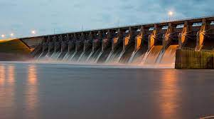

Hydroelectric Power: The Future of Energy?
Hydroelectric power is a type of renewable energy that uses flowing water to generate electricity. It is one of the oldest and most widely used forms of renewable energy, with hydroelectric power plants found all over the world. Hydroelectric power is considered a promising solution for meeting the world's energy needs while reducing carbon emissions and mitigating the effects of climate change.
One of the main advantages of hydroelectric power is its low environmental impact. Unlike traditional fossil fuels, hydroelectric power does not produce harmful pollutants or greenhouse gases that contribute to climate change. The energy generated by hydroelectric power is clean, renewable, and sustainable, making it an attractive option for reducing carbon emissions and promoting environmental sustainability.

Another advantage of hydroelectric power is its reliability. Unlike other forms of renewable energy, such as wind and solar power, hydroelectric power can be generated consistently, 24 hours a day, 7 days a week. This makes hydroelectric power an attractive option for meeting the energy needs of large cities and industrial centers.
Hydroelectric power also has the potential to create jobs and stimulate economic growth. As the hydroelectric power industry continues to expand, it is creating new job opportunities in manufacturing, construction, and maintenance. Additionally, hydroelectric power projects can provide a source of revenue for rural communities through land leases and property taxes.
However, there are also some potential environmental impacts associated with hydroelectric power. One concern is the impact of hydroelectric power plants on aquatic ecosystems. Hydroelectric power plants can alter water levels and flow patterns, which can have an impact on fish populations and other aquatic species. Additionally, hydroelectric power plants can alter the natural flow of rivers and streams, which can impact water quality and habitat.
Another potential environmental impact of hydroelectric power is the impact on downstream areas. Hydroelectric power plants can alter the flow of water downstream, which can impact agriculture, fishing, and other industries that rely on water resources. Additionally, hydroelectric power plants can alter the natural flow of rivers and streams, which can impact the landscape and the cultural and historical significance of the area.
Overall, hydroelectric power has the potential to be a significant contributor to a sustainable and environmentally friendly energy future. While there are some potential environmental impacts to consider, the benefits of hydroelectric power, such as its low carbon footprint, reliability, and job creation, make it a promising solution for reducing carbon emissions and promoting environmental sustainability. As technology continues to improve, hydroelectric power will likely become an even more attractive option for meeting our energy needs while protecting the environment.